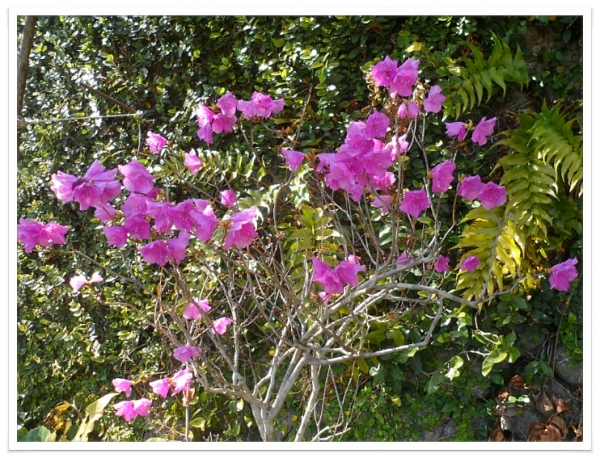

외부 css스타일 적용 <link rel = "stylesheet" href = "../css/public.css"> <sub> : 윗 첨자 <sub> : 아래 첨자 <span> : 일부분의 문자를 분리 글자를 굵게, 강하게 볼드 : <strong> , <b> 글자를 기울인꼴 강조 이탤릭 <i> , <em>
김소월의 ‘진달래꽃’ 
나 보기가 역겨워 가실 "때에는" 말없이 고이 보내 드리오리다 영변에 약산 진달래꽃 아름 따다 가실 길에 뿌리오리다 가시는 걸음 걸음 놓인 그 꽃을 사뿐히 즈려 밟고 가시옵소서 나 보기가 역겨워 가실 때에는 죽어도 아니 눈물 흘리오리다